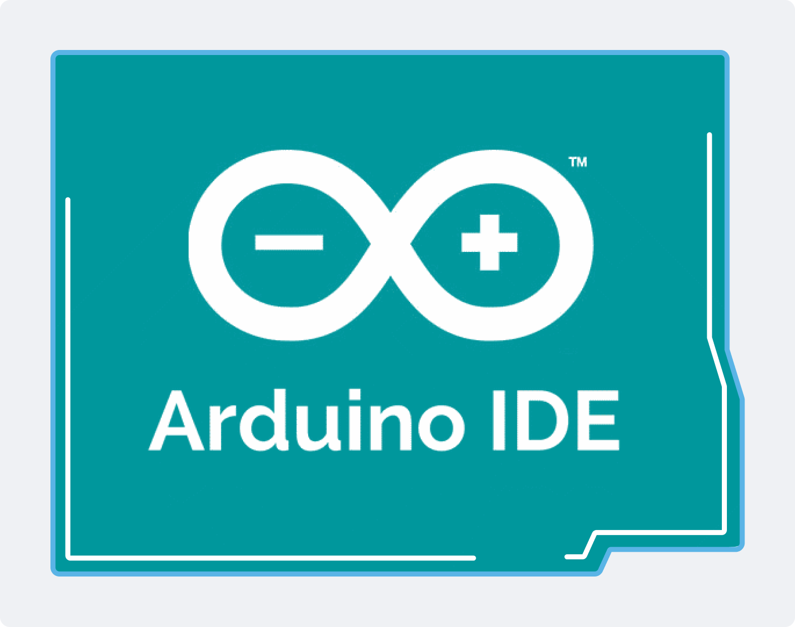

IA et activités
Pendant mon stage chez EPITECH, nous avons également abordé ce qu’est le hardware. On nous a expliqué que le hardware est présent partout dans notre quotidien, dans les ordinateurs, les téléphones, les objets connectés, et qu’il est essentiel au fonctionnement de tous les systèmes informatiques. Cette partie nous a permis de mieux comprendre le lien entre le matériel et le logiciel, et comment les deux travaillent ensemble.
Nous avons aussi réalisé une activité pratique avec Arduino. Cet exercice nous a permis de manipuler un peu de matériel et de programmer des composants simples. Grâce à cela, nous avons pu acquérir des bases sur le fonctionnement d’Arduino et comprendre comment on peut contrôler des éléments physiques à l’aide du code.


Ressenti
Cette activité m’a semblé plus difficile que les autres, car je n’avais pas beaucoup d’expérience en hardware auparavant. Contrairement aux exercices sur l’IA ou la programmation, j’étais moins à l’aise avec la partie matérielle et la manipulation des composants.